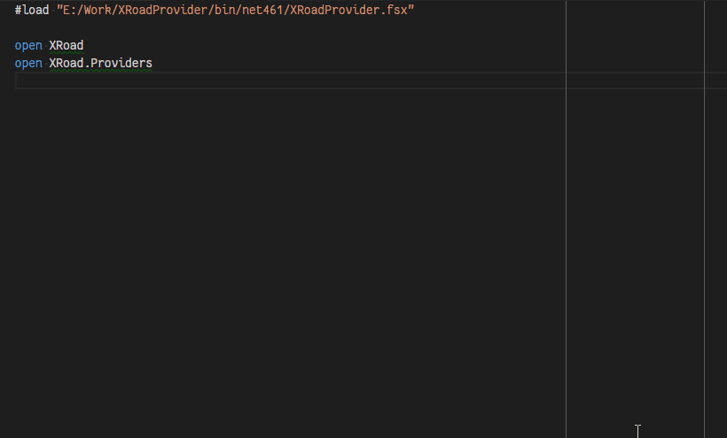

XRoadProducer Type Provider
XRoadProducer is the main working horse of the package. It takes X-Road web service WSDL
specification as input and returns a type which wraps all the types defined in the types
part of WSDL document and also service client types which implement binding part of
the WSDL document to provide service types for calling X-Road services over the network.
Although it looks like very dynamic code in IDE with all the code completion based on WSDL definition, in the background the code is actually compiled into real assembly which works as usual in .NET platform. So there is no runtime performance hit in regards to resulting output of the type provider.
XRoadProducer Type Provider in Action
Here is a small animation visualizing type provider usage in code editor or IDE with proper F# language support (Visual Studio, Visual Studio Code with Ionide extension, etc.).

Configuring XRoadProducer
Primary functionality of XRoadProducer type provider is executed with the following line:
type Xrd6 = XRoadProducer<"E:/Work/XRoadProvider/tests/XRoadProvider.Tests/Wsdl/XRoadV6.wsdl.xml">
This line executes XRoadProducer type provider which interprets given service description document
(WSDL) and returns new type which wraps required types from the schema which enable communication
with web service that follows the same WSDL. The resulting root type is saved into current namespace
with given alias (Xrd6 in current sample fragment).
The type provider takes its parameters between angle brackets '<' and '>' and for XRoadProducer
type provider there are following configuration options available:
| Parameter name | Type | Required | Default value | Description |
|---|---|---|---|---|
Uri |
String |
Yes | - | WSDL document location (either local file or network resource). |
LanguageCode |
String |
No | "et" |
Specify language code that is extracted as documentation tooltips. |
Filter |
String |
No | "" |
Comma separated list of operations which should be included in definitions. By default, all operations are included. |
It should be noted, that type provider parameters can only be compile time constant values and literals
which means you cannot "calculate" the parameters. You can hold parameter values in literal values
using LiteralAttribute attribute:
let [<Literal>] WsdlLocation = "http://someurl/and.wsdl"
For local files, it is sometimes convenient to provide relative locations, which can be achieved by using
special F# compiler predefined variable __SOURCE_DIRECTORY__ which represents path of the directory
containing current script or source file:
let [<Literal>] WsdlLocation = __SOURCE_DIRECTORY__ + "/file.wsdl"
Using predefined values as type provider arguments:
type Xrd6 = XRoadProducer<WsdlLocation>
Structure of Returned Types
The XRoadProducer type provider generates one root type which holds all needed types
by the WSDL definition. The types are divided into two categories with their own
subtypes under the root type:
DefinedTypesholds types from WSDLtypessection grouped by the namespace they are defined in. These types are usually parameters of the services and types referenced by other types defined by Xml Schema standard. Each namespace type holds special__TargetNamespace__value which is literal value of the containing namespace.Root type defines subtype for every
servicedefinition in WSDL document which themselves have subtypes for everyportTypebinding that service definition. TheportTypebinding type implements AbstractEndpointDeclaration which enables basic communication, that is described for that binding and also provides methods for each individual operation that is available for that binding.Each type extending AbstractEndpointDeclaration inherits configuration options for providing target service or security server url which serves X-Road requests; certificate parameters for trusting self-signed service certificates or providing client authentication certificates; and request/response event handlers to support message logging or for further message analysis.
Third Party Dependencies
To expose better structure of WSDL definitions, the type provider library introduces some dependencies to outcoming types:
Optional Single value elements which have
minOccurs="0"attribute defined in their definition are wrapped intoOptiontype which expresses whether the value was provided in Xml message or not.Option.Some<T>(...)value specifies that Xml message contained the value which is wrapped intoOptiontype.Option.None<T>()value represents missing Xml tag.When service description relies heavily on optional elements, the resulting types will contain a lot of optional properties, which makes their usage somewhat bloated. It is recommended to collect most of repeating logic into extension methods to simplify usage of optional values.
NodaTime Since .NET framework default date/time type
System.DateTimedoes not differentiate between date and dateTime types, the type provider package usesNodaTimepackage to represent date/time related types. Conversion options between NodaTime and SystemDateTimetypes can be studied fromNodaTimedocumentation.